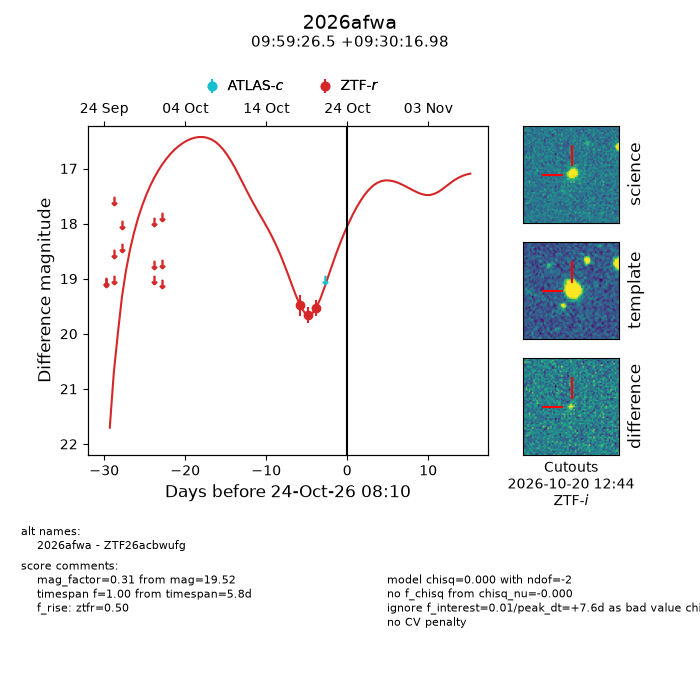
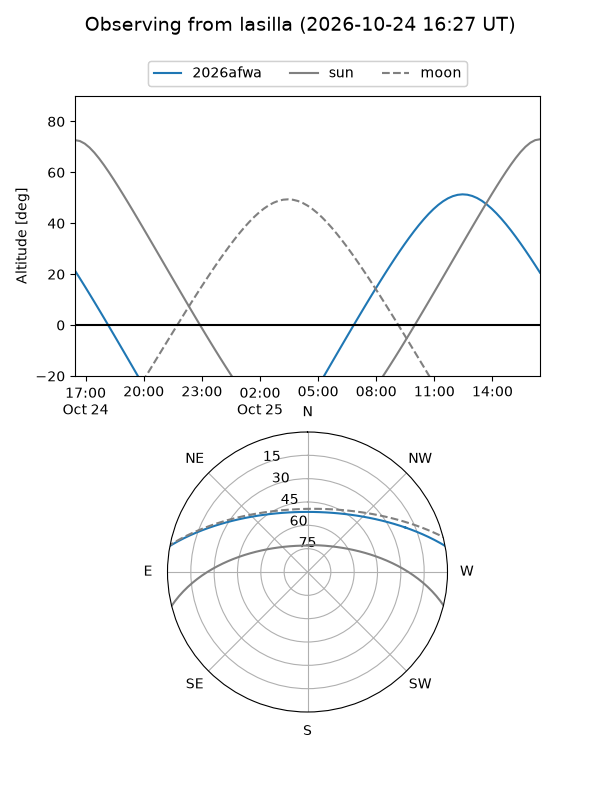
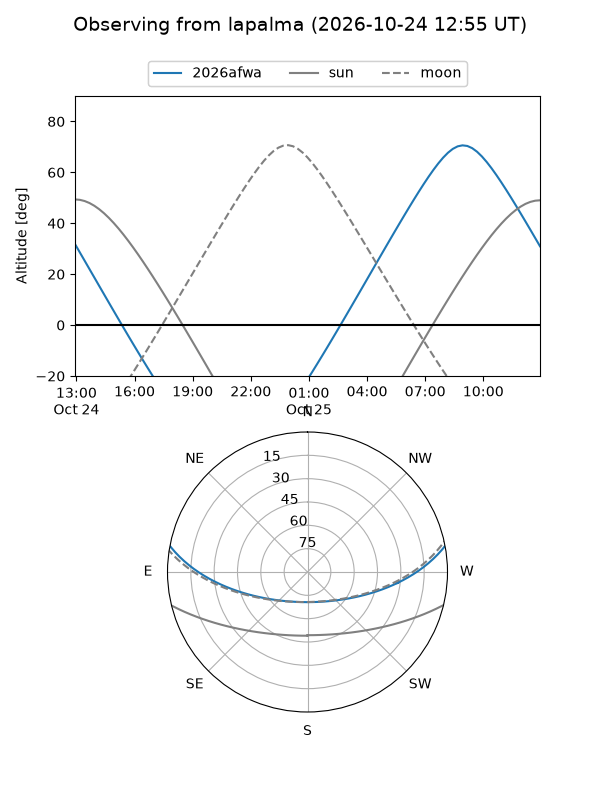
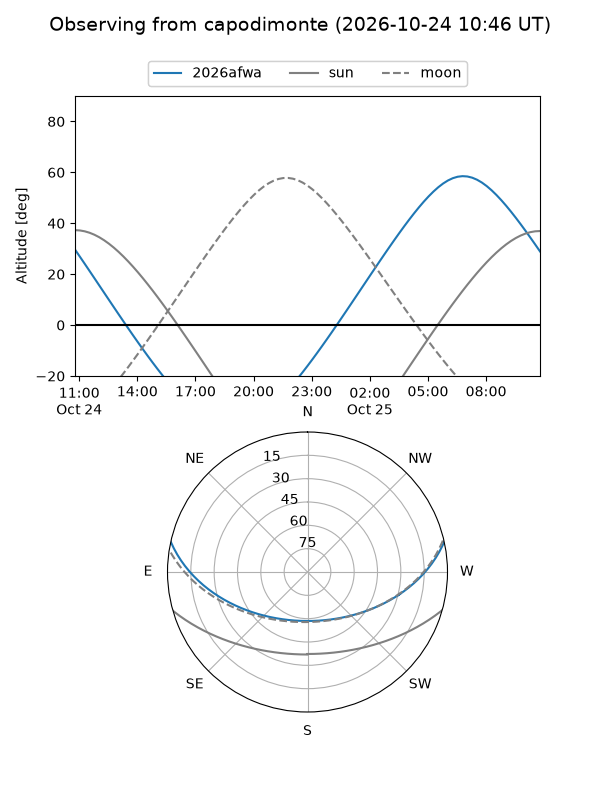
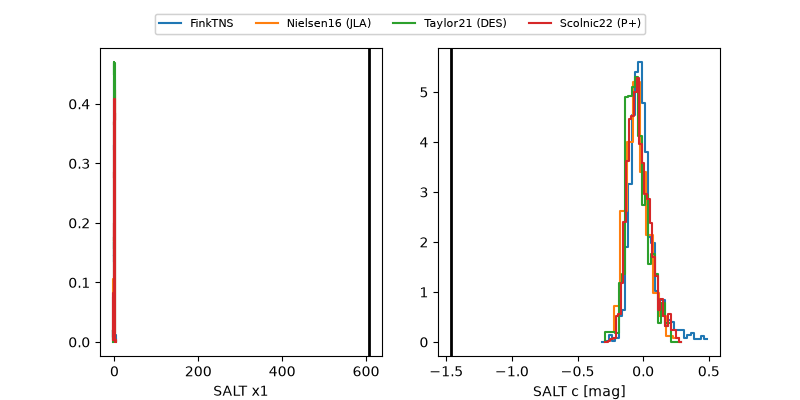

2026afwa
Target 2026afwa at 2026-10-24 20:11
Aliases and brokers:
FINK-ZTF: ztf.fink-portal.org/ZTF26acbwufg
Lasair-ZTF: lasair-ztf.lsst.ac.uk/objects/ZTF26acbwufg
ALeRCE-ZTF: alerce.online/object/ZTF26acbwufg
YSE-PZ: ziggy.ucolick.org/yse/transient_detail/2026afwa
TNS name: wis-tns.org/object/2026afwa
Direct TNS query: direct search
alt names
ZTF26acbwufg (ztf,fink_ztf)
2026afwa (tns,yse)
Coordinates:
equatorial (ra, dec) = 149.8602,+9.50472
equatorial (HMS+DMS) = 09:59:26.45,+09:30:16.98
galactic (l, b) = (228.0684,+45.82908)
Flags:
peak dt: +8.1
Photometry:
last ztfr=19.52
3 ztfr detections
Lightcurve

Visibility



Additional plots
